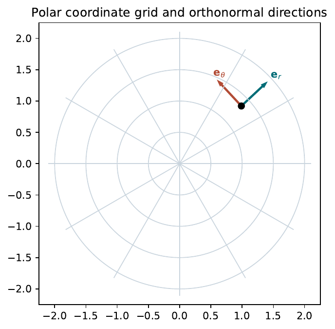
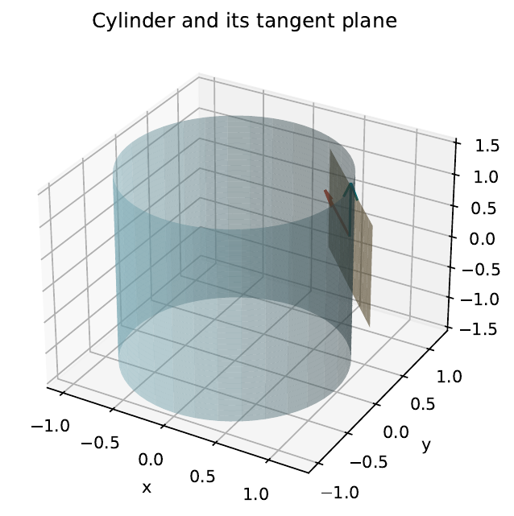
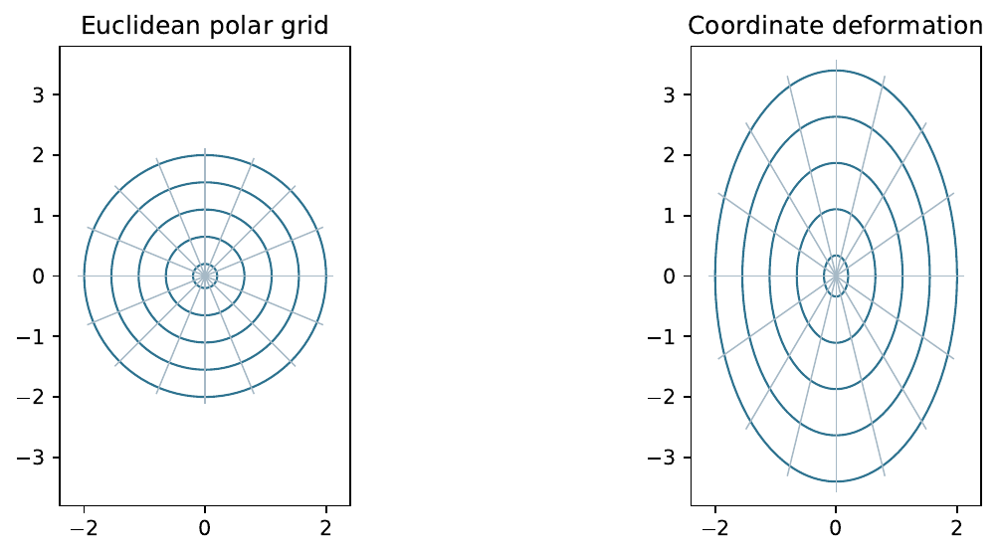
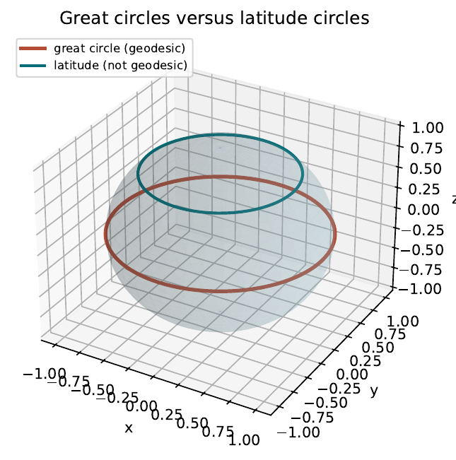
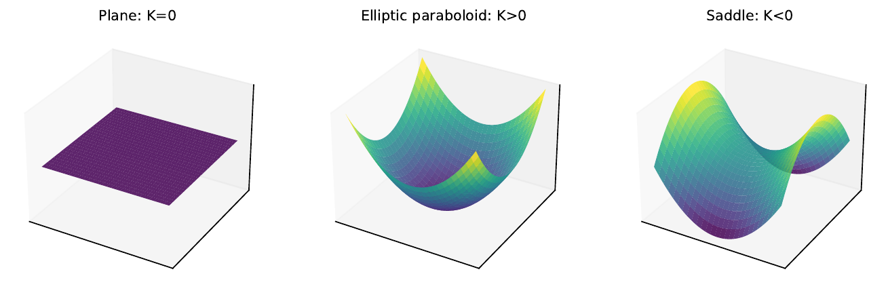
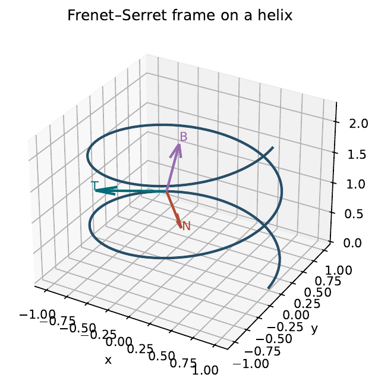

7. Introduction to Tensor Calculus and Differential Geometry
Learning. After studying this chapter, you should be able to distinguish coordinates from geometric objects; construct tangent vectors and metrics on parametrized surfaces; transform vector and covector components; use Einstein notation; calculate Christoffel symbols and covariant derivatives; formulate and solve geodesic equations; compute Gaussian curvature and interpret the Riemann curvature tensor; derive the Frenet–Serret equations; and use R and Python to investigate geometric problems.
Interactive investigation: Surface curvature
Compare z=x²+c y² at the origin as c varies.
Explore: How does the sign of Gaussian curvature distinguish saddle and bowl geometry?
Why geometry requires more than Cartesian coordinates
A plane can be described by Cartesian coordinates, polar coordinates, or a rotated grid without changing the plane itself. A sphere can be represented using longitude and latitude, but the coordinate singularities at its poles are not singularities of the sphere. The central task of differential geometry is to distinguish intrinsic geometric information from artifacts of coordinates. Tensor calculus provides a systematic language for making this distinction.
A smooth coordinate chart labels points using coordinates \(q^1,\ldots,q^n\). In Euclidean space an immersion \(\boldsymbol{X}(q^1,\ldots,q^n)\) produces coordinate tangent vectors \[\boldsymbol{e}_i=\frac{\partial\boldsymbol{X}}{\partial q^i}.\] A vector \(\boldsymbol{v}\) has coordinate components \(v^i\) when \(\boldsymbol{v}=v^i\boldsymbol{e}_i\); here and below, a repeated upper and lower index is summed over its range (Einstein convention). The superscript \(i\) is a component label, not an exponent.
Example — Polar coordinates. For \(\boldsymbol{X}(r,\theta)=(r\cos\theta,r\sin\theta)\), \[\boldsymbol{e}_r=(\cos\theta,\sin\theta),\qquad \boldsymbol{e}_\theta=(-r\sin\theta,r\cos\theta).\] The second coordinate basis vector has length \(r\), not \(1\). The associated unit angular direction is \(\widehat{\boldsymbol{e}}_\theta=\boldsymbol{e}_\theta/r\) for \(r>0\). This distinction matters when differentiating vector components.

Tangent spaces, differentials, and covectors
A tangent vector at a point describes an infinitesimal direction along a curve or surface. For a surface \(\boldsymbol{X}(u,v)\) with linearly independent \(\boldsymbol{X}_u,\boldsymbol{X}_v\), its tangent plane is spanned by those two vectors. If \(f\) is a differentiable scalar field, its differential \(\,\mathrm{d}f\) is a covector: it takes a tangent vector \(\boldsymbol{v}\) to the directional rate of change \(\,\mathrm{d}f(\boldsymbol{v})\). In coordinates, \[\,\mathrm{d}f=\frac{\partial f}{\partial q^i}\,\,\mathrm{d}q^i,\qquad \,\mathrm{d}f(\boldsymbol{v})=\frac{\partial f}{\partial q^i}v^i.\] A covector and a vector are different mathematical objects, even though a Euclidean dot product can identify them. On a curved surface, the metric makes this identification precise.

Checkpoint. Why does the angular coordinate vector in polar coordinates have length \(r\), while the angular unit vector has length \(1\)? Explain geometrically using a small change \(\Delta\theta\).
Coordinate transformations and tensor components
Suppose \(q^i=q^i(\widetilde q^1,\ldots,\widetilde q^n)\) is a smooth change of coordinates with invertible Jacobian. The chain rule gives \[\widetilde{\boldsymbol{e}}_a=\frac{\partial q^i}{\partial\widetilde q^a}\boldsymbol{e}_i,\qquad \widetilde v^a=\frac{\partial\widetilde q^a}{\partial q^i}v^i.\] Thus contravariant vector components transform with the inverse Jacobian of the basis transformation. Covector components transform in the opposite manner: \[\widetilde\omega_a=\frac{\partial q^i}{\partial\widetilde q^a}\omega_i.\] Their contraction \(\omega_i v^i\) is independent of coordinates. A type \((1,1)\) tensor \(T^i{}_j\) has one contravariant and one covariant index and transforms by applying the appropriate Jacobian factor to each index. The key idea is not the placement of symbols by itself but the transformation law.
Example — A radial vector. At \((x,y)=(1,1)\), the Cartesian vector \(\boldsymbol{v}=(1,1)\) points radially outward. In polar coordinates \((r,\theta)=(\sqrt2,\pi/4)\), its coordinate components are \((v^r,v^\theta)=(\sqrt2,0)\). This does not mean the vector has changed: the coordinate basis has changed.
Remark — Computational connection. This derivation is implemented in both languages in the paired computational sections and in the companion source files.
The metric tensor and geometric measurement
Definition. A Riemannian metric assigns to each point a symmetric, positive-definite bilinear form \(g\) on its tangent space. In local coordinates, its components are \(g_{ij}=g(\boldsymbol{e}_i,\boldsymbol{e}_j)\), so \[\,\mathrm{d}s^2=g_{ij}\,\,\mathrm{d}q^i\,\mathrm{d}q^j,\qquad \left\lVert \boldsymbol{v}\right\rVert_g^2=g_{ij}v^iv^j.\]
For a surface embedded in Euclidean three-space, \(g_{ij}=\boldsymbol{X}_i\cdot\boldsymbol{X}_j\). In the classical first fundamental form notation, \(E=\boldsymbol{X}_u\cdot\boldsymbol{X}_u\), \(F=\boldsymbol{X}_u\cdot\boldsymbol{X}_v\), \(G=\boldsymbol{X}_v\cdot\boldsymbol{X}_v\), and \[\,\mathrm{d}s^2=E\,\,\mathrm{d}u^2+2F\,\,\mathrm{d}u\,\mathrm{d}v+G\,\,\mathrm{d}v^2.\] The induced area element is \(\,\mathrm{d}A=\sqrt{EG-F^2}\,\,\mathrm{d}u\,\mathrm{d}v=\sqrt{\det(g)}\,\,\mathrm{d}u\,\mathrm{d}v\).
Example — Plane in polar coordinates. The coordinate vectors above yield \(g_{rr}=1\), \(g_{r\theta}=0\), and \(g_{\theta\theta}=r^2\). Consequently \[\,\mathrm{d}s^2=\,\mathrm{d}r^2+r^2\,\mathrm{d}\theta^2,\qquad \,\mathrm{d}A=r\,\,\mathrm{d}r\,\mathrm{d}\theta.\] The factor \(r\) in the area element is a geometric consequence of the metric and agrees with the Jacobian in multivariable integration.
Example — Unit sphere. With \(\boldsymbol{X}(\vartheta,\varphi)=(\sin\vartheta\cos\varphi,\sin\vartheta\sin\varphi,\cos\vartheta)\), \(0<\vartheta<\pi\), \[g=\begin{pmatrix}1&0\\0&\sin^2\vartheta\end{pmatrix},\qquad \,\mathrm{d}A=\sin\vartheta\,\,\mathrm{d}\vartheta\,\mathrm{d}\varphi.\] The metric degenerates at the poles only because this particular chart is singular there; the sphere remains smooth.

Raising and lowering indices
Because the metric is positive definite, its matrix has an inverse \((g^{ij})\), defined by \(g^{ik}g_{kj}=\delta^i_j\). It converts vector components to covector components and conversely: \[v_i=g_{ij}v^j,\qquad v^i=g^{ij}v_j.\] For a scalar field \(f\), the differential has components \(\partial_i f\), while the gradient vector has components \[(\operatorname{grad}f)^i=g^{ij}\partial_j f.\] In polar coordinates this yields \[\operatorname{grad}f=f_r\,\boldsymbol{e}_r+\frac{f_\theta}{r^2}\,\boldsymbol{e}_\theta =f_r\,\widehat{\boldsymbol{e}}_r+\frac{f_\theta}{r}\,\widehat{\boldsymbol{e}}_\theta.\]
Example — Gradient of an angular function. For \(f(r,\theta)=\theta\) on a sector not crossing a branch cut, \(\,\mathrm{d}f=\,\mathrm{d}\theta\) and \(\operatorname{grad}f=r^{-2}\boldsymbol{e}_\theta=r^{-1}\widehat{\boldsymbol{e}}_\theta\). Its magnitude is \(1/r\): the angular coordinate changes more rapidly per unit distance near the origin.
Christoffel symbols and covariant differentiation
Ordinary derivatives of vector components do not generally transform as tensor components, because the coordinate basis changes with position. The Levi–Civita connection is the unique connection that is torsion-free and compatible with the metric. Its Christoffel symbols are \[\Gamma^k_{ij}=\frac12 g^{k\ell}\big(\partial_i g_{j\ell}+\partial_j g_{i\ell}-\partial_\ell g_{ij}\big).\] For a vector field \(V=V^k\boldsymbol{e}_k\), the covariant derivative is \[(\nabla_i V)^k=\partial_i V^k+\Gamma^k_{ij}V^j.\] For a covector field \(\omega_j\) the correction has the opposite sign: \[(\nabla_i\omega)_j=\partial_i\omega_j-\Gamma^k_{ij}\omega_k.\] The Christoffel symbols themselves are not tensor components. In particular, nonzero Christoffel symbols do not by themselves imply intrinsic curvature.
Example — Polar connection. For \(g=\operatorname{diag}(1,r^2)\), the only nonzero Christoffel symbols are \[\Gamma^r_{\theta\theta}=-r,\qquad \Gamma^\theta_{r\theta}=\Gamma^\theta_{\theta r}=\frac1r.\] The Euclidean plane has zero intrinsic curvature, even though these coefficients are nonzero in polar coordinates.
Remark — Computational connection. This derivation is implemented in both languages in the paired computational sections and in the companion source files.
Checkpoint. Compute \(\nabla_\theta V\) when \(V^r=1\) and \(V^\theta=0\) in polar coordinates. Why is its angular component not zero?
Geodesics: locally straight paths on curved spaces
Definition. A geodesic \(q^k(t)\) for an affine parameter \(t\) satisfies \[\frac{\,\mathrm{d}^2q^k}{\,\mathrm{d}t^2}+\Gamma^k_{ij}(q)\frac{\,\mathrm{d}q^i}{\,\mathrm{d}t}\frac{\,\mathrm{d}q^j}{\,\mathrm{d}t}=0.\]
The equation arises from stationary points of the energy functional \(E[q]=\frac12\int g_{ij}(q)\dot q^i\dot q^j\,\,\mathrm{d}t\). The Euler–Lagrange equations simplify to the geodesic equation above. Geodesics are locally length-minimizing for sufficiently short segments, but a long geodesic need not be globally shortest between its endpoints.
Example — Geodesics in polar coordinates. The equations become \[\ddot r-r\dot\theta^2=0,\qquad \ddot\theta+\frac{2}{r}\dot r\dot\theta=0.\] These describe ordinary straight lines in the Euclidean plane. A path of constant \(r\) with nonzero \(\dot\theta\) is not a geodesic: the radial equation would require \(-r\dot\theta^2=0\).
Example — Great circles on a sphere. For the unit sphere, \(g=\operatorname{diag}(1,\sin^2\vartheta)\), and \[\Gamma^\vartheta_{\varphi\varphi}=-\sin\vartheta\cos\vartheta,\qquad \Gamma^\varphi_{\vartheta\varphi}=\Gamma^\varphi_{\varphi\vartheta}=\cot\vartheta.\] The equator \(\vartheta=\pi/2\), \(\varphi=t\) satisfies the equations. A latitude with fixed \(\vartheta\ne\pi/2\) generally does not. All great circles are geodesics, but only the shorter arc between non-antipodal points is globally minimizing.

Numerical geodesics with SciPy
To solve geodesic equations numerically, introduce velocities \(v^k=\dot q^k\) and write a first-order system \[\dot q^k=v^k,\qquad \dot v^k=-\Gamma^k_{ij}(q)v^iv^j.\] For polar coordinates, the right-hand side is \((v_r,v_\theta,r v_\theta^2,-2v_rv_\theta/r)\). Numerical integration should avoid the coordinate singularity \(r=0\), even when the underlying Euclidean trajectory is smooth.
Remark — Computational connection. This derivation is implemented in both languages in the paired computational sections and in the companion source files.
The initial Cartesian point is \((1,0)\) with initial Cartesian velocity \((0,1)\), so the exact path is the straight line \((x,y)=(1,t)\).
Curvature: detecting intrinsic bending
For a regular surface \(\boldsymbol{X}(u,v)\) with a chosen unit normal \(\boldsymbol{n}\), the second fundamental form has coefficients \[L=\boldsymbol{X}_{uu}\cdot\boldsymbol{n},\qquad M=\boldsymbol{X}_{uv}\cdot\boldsymbol{n},\qquad N=\boldsymbol{X}_{vv}\cdot\boldsymbol{n}.\] Its Gaussian curvature and mean curvature (with the convention \(H=(k_1+k_2)/2\)) are \[K=\frac{LN-M^2}{EG-F^2},\qquad H=\frac{EN-2FM+GL}{2(EG-F^2)}.\] The sign of \(H\) depends on the normal orientation; \(K\) does not. At a point, positive \(K\) indicates principal curvatures of the same sign, negative \(K\) indicates opposite signs, and \(K=0\) indicates at least one zero principal curvature.
Example — Plane, cylinder, and sphere. A plane has \(K=0\). A circular cylinder also has \(K=0\) because it bends in only one principal direction. A sphere of radius \(a\) has \(K=1/a^2\) everywhere. Although the cylinder appears curved in three-space, its intrinsic geometry is locally flat.
Example — Graph curvature. For a graph \(z=f(x,y)\), \[K=\frac{f_{xx}f_{yy}-f_{xy}^2}{(1+f_x^2+f_y^2)^2}.\] For \(f=x^2+y^2\), \(K=4/(1+4x^2+4y^2)^2>0\). For \(f=x^2-y^2\), \(K=-4/(1+4x^2+4y^2)^2<0\).

Riemann curvature and coordinate independence
The Riemann curvature tensor measures the failure of covariant derivatives to commute. With the convention \[(\nabla_i\nabla_j-\nabla_j\nabla_i)V^\ell=R^\ell{}_{kij}V^k,\] its coordinate components are \[R^\ell{}_{kij}=\partial_i\Gamma^\ell_{jk}-\partial_j\Gamma^\ell_{ik}+\Gamma^\ell_{im}\Gamma^m_{jk}-\Gamma^\ell_{jm}\Gamma^m_{ik}.\] The Ricci tensor is the contraction \(R_{kj}=R^i{}_{kij}\) and scalar curvature is \(S=g^{kj}R_{kj}\). On a two-dimensional surface \(S=2K\) under this convention. A sphere of radius \(a\) has \(S=2/a^2\); the Euclidean plane has \(S=0\) in every smooth coordinate chart.
Remark. Curvature sign conventions differ across references. Always state the defining commutator and the index order when comparing formulas. Tensor curvature is intrinsic, whereas the second fundamental form depends on an embedding and a chosen normal.
Remark — Computational connection. This derivation is implemented in both languages in the paired computational sections and in the companion source files.
The Frenet–Serret frame of a space curve
Let \(\boldsymbol{r}(s)\) be a regular curve parametrized by arc length. The unit tangent is \(\boldsymbol{T}=\boldsymbol{r}'(s)\). When \(\kappa=\left\lVert \boldsymbol{T}'(s)\right\rVert>0\), define \(\boldsymbol{N}=\boldsymbol{T}'/\kappa\) and \(\boldsymbol{B}=\boldsymbol{T}\times\boldsymbol{N}\). The Frenet–Serret equations are \[\boldsymbol{T}'=\kappa\boldsymbol{N},\qquad \boldsymbol{N}'=-\kappa\boldsymbol{T}+\tau\boldsymbol{B},\qquad \boldsymbol{B}'=-\tau\boldsymbol{N}.\] For an arbitrary regular parameter \(t\), \[\kappa=\frac{\left\lVert \boldsymbol{r}'\times\boldsymbol{r}''\right\rVert}{\left\lVert \boldsymbol{r}'\right\rVert^3},\qquad \tau=\frac{\det(\boldsymbol{r}',\boldsymbol{r}'',\boldsymbol{r}''')}{\left\lVert \boldsymbol{r}'\times\boldsymbol{r}''\right\rVert^2},\] where the torsion formula requires \(\boldsymbol{r}'\times\boldsymbol{r}''\ne0\). Curvature measures turning; torsion measures the rotation of the osculating plane.
Example — Circular helix. For \(\boldsymbol{r}(t)=(a\cos t,a\sin t,bt)\) with \(a>0\), differentiation yields \[\kappa=\frac{a}{a^2+b^2},\qquad \tau=\frac{b}{a^2+b^2}.\] The helix has constant curvature and torsion. When \(b=0\), the curve lies in a plane and has torsion zero.

Remark — Computational connection. This derivation is implemented in both languages in the paired computational sections and in the companion source files.
Additional mathematical examples and R-manuscript connections
Coordinate transformations of a velocity
For \(x=r\cos\theta\), \(y=r\sin\theta\), differentiation yields \[\begin{pmatrix}\dot x\\\dot y\end{pmatrix}=\begin{pmatrix}\cos\theta&-r\sin\theta\\\sin\theta&r\cos\theta\end{pmatrix}\begin{pmatrix}\dot r\\\dot\theta\end{pmatrix}.\] For \(r=2\), \(\theta=\pi/6\), \(\dot r=0.3\), and \(\dot\theta=0.4\), the two Cartesian velocity components are \(0.3\cos(\pi/6)-0.8\sin(\pi/6)\) and \(0.3\sin(\pi/6)+0.8\cos(\pi/6)\). The angular component is not itself a physical speed: the tangential speed is \(r\dot\theta\).
Lowering and raising indices
At \(r=2\) the polar metric is \(g=\operatorname{diag}(1,4)\). If \(V^i=(2,3)\), then \(V_i=(2,12)\) and \(\lVert V\rVert_g^2=V_iV^i=40\). Multiplying by \(g^{-1}\) recovers the original contravariant components.
The cylinder as an intrinsically flat surface
For \(X(u,v)=(a\cos u,a\sin u,v)\), the metric is \(\operatorname{diag}(a^2,1)\). Since its components are constant, the Christoffel symbols vanish in this chart. The cylinder bends in three-space but has zero Gaussian curvature. This distinguishes intrinsic curvature from extrinsic bending.
Deriving the Levi–Civita connection from geometric principles
The metric-compatible and torsion-free conditions are not merely convenient choices: together they determine a unique connection. Metric compatibility states \[\partial_i g_{jk}=\Gamma^\ell_{ij}g_{\ell k}+\Gamma^\ell_{ik}g_{j\ell}.\] Write this identity for the cyclic permutations \((i,j,k)\), \((j,i,k)\), and \((k,i,j)\). Add the first two and subtract the third, and use \(\Gamma^\ell_{ij}=\Gamma^\ell_{ji}\). One obtains \[2g_{k\ell}\Gamma^\ell_{ij}=\partial_i g_{jk}+\partial_j g_{ik}-\partial_k g_{ij}.\] Multiplication by \(g^{mk}\) yields the Christoffel formula. This derivation also shows why the inverse metric appears: it converts the lower connection index to an upper one.
Example — Connection on a sphere of radius \(R\). For \(g_{\vartheta\vartheta}=R^2\) and \(g_{\varphi\varphi}=R^2\sin^2\vartheta\), we have \(\partial_\vartheta g_{\varphi\varphi}=2R^2\sin\vartheta\cos\vartheta\). Hence \[\Gamma^\vartheta_{\varphi\varphi}=-\frac{1}{2R^2}\partial_\vartheta g_{\varphi\varphi}=-\sin\vartheta\cos\vartheta,\quad \Gamma^\varphi_{\vartheta\varphi}=\frac{\partial_\vartheta g_{\varphi\varphi}}{2R^2\sin^2\vartheta}=\cot\vartheta.\] The connection coefficients are independent of the constant radius, whereas the Gaussian curvature is \(R^{-2}\).
Checkpoint. Explain why changing the sphere’s radius leaves these Christoffel symbols unchanged but changes lengths and curvature.
Geodesics from a variational principle: a worked derivation
For a curve \(q(t)\) in local coordinates, define its energy \[\mathcal E[q]=\frac12\int_a^b g_{ij}(q(t))\dot q^i\dot q^j\,\,\mathrm{d}t.\] The Euler–Lagrange equation for coordinate \(q^k\) reads \[\frac{\,\mathrm{d}}{\,\mathrm{d}t}\bigl(g_{kj}\dot q^j\bigr)-\frac12\partial_k g_{ij}\dot q^i\dot q^j=0.\] Expanding the time derivative and using symmetry of \(\dot q^i\dot q^j\) gives \[g_{kj}\ddot q^j+\frac12\bigl(\partial_i g_{kj}+\partial_j g_{ki}-\partial_k g_{ij}\bigr)\dot q^i\dot q^j=0.\] Multiplying by \(g^{mk}\) yields \(\ddot q^m+\Gamma^m_{ij}\dot q^i\dot q^j=0\). The parameter must be affine; an arbitrary reparametrization can introduce an additional term proportional to velocity.
Example — Conserved angular momentum on a sphere. The spherical energy is \(\frac12R^2(\dot\vartheta^2+\sin^2\vartheta\dot\varphi^2)\). Because \(\varphi\) does not appear explicitly, the Euler–Lagrange equation gives \[R^2\sin^2\vartheta\,\dot\varphi=\ell,\] a constant. A second conserved quantity is the speed squared \(R^2(\dot\vartheta^2+\sin^2\vartheta\dot\varphi^2)\). These invariants provide useful checks of numerical geodesic solvers.
Curvature calculations in detail
First and second fundamental forms of a graph
For \(\boldsymbol{X}(x,y)=(x,y,f(x,y))\), the tangent vectors are \(\boldsymbol{X}_x=(1,0,f_x)\) and \(\boldsymbol{X}_y=(0,1,f_y)\). Therefore \[E=1+f_x^2,\qquad F=f_xf_y,\qquad G=1+f_y^2.\] With upward unit normal \(\boldsymbol{n}=(-f_x,-f_y,1)/\sqrt{1+f_x^2+f_y^2}\), \[L=\frac{f_{xx}}{\sqrt{1+f_x^2+f_y^2}},\quad M=\frac{f_{xy}}{\sqrt{1+f_x^2+f_y^2}},\quad N=\frac{f_{yy}}{\sqrt{1+f_x^2+f_y^2}}.\] Substituting into \((LN-M^2)/(EG-F^2)\) proves the graph curvature formula stated earlier.
Example — Paraboloid versus saddle. At \((0,0)\), the graph \(f(x,y)=x^2+y^2\) has Hessian \(\operatorname{diag}(2,2)\) and Gaussian curvature \(4\). The graph \(f(x,y)=x^2-y^2\) has Hessian \(\operatorname{diag}(2,-2)\) and curvature \(-4\). These opposite signs describe intrinsically different local geometries, not merely different orientations of the normal.
Intrinsic curvature of a cylinder
Consider \(\boldsymbol{X}(u,v)=(a\cos u,a\sin u,v)\) with \(a>0\). Its induced metric is \(\operatorname{diag}(a^2,1)\), independent of \(u\) and \(v\). Hence all Christoffel symbols vanish in this chart, so the Riemann tensor vanishes. The map \((u,v)\mapsto(au,v)\) preserves the local line element, demonstrating a local isometry to a plane. Globally, the periodic identification of \(u\) means that a full cylinder is not globally identical to the plane.
Checkpoint. A cylinder and sphere both bend in ambient space. Why does one have \(K=0\) and the other \(K>0\)?
Numerical geometry: errors, conditioning, and validation
A metric tensor must be symmetric and positive definite in every regular coordinate chart. In floating-point calculations, check symmetry with \(\lVert g-g^{\mathsf T}\rVert\), and test the eigenvalues against a tolerance scaled to the matrix norm. The condition number \(\kappa_2(g)\) measures sensitivity when raising indices or solving metric systems.
For the polar metric \(g=\operatorname{diag}(1,r^2)\), \(\kappa_2(g)=\max(1,r^2)/\min(1,r^2)\), which diverges as \(r\to0\) and grows again for very large \(r\). This is a coordinate effect rather than intrinsic curvature. A numerical algorithm should switch charts or use Cartesian coordinates near \(r=0\).
Example — Convergence of a geodesic integrator. Start at \((x,y)=(1,0)\) with Cartesian velocity \((0,1)\). The exact curve is \((1,t)\), so \(r(t)=\sqrt{1+t^2}\) and \(\theta(t)=\arctan t\). A fourth-order Runge–Kutta method for the polar geodesic equations should show approximately a factor of \(16\) decrease in global error when the step size is halved, once the asymptotic regime is reached. Numerical errors close to machine precision may not exhibit this ratio reliably.
Further source-derived R investigations
The original R manuscript includes a numerical metric construction, a generic finite-difference connection calculation, a fourth-order Runge–Kutta geodesic integrator, numerical helix curvature and torsion, and a paraboloid surface-area calculation. These are retained in the original-source archive and inform the exercises below; the simplified paired scripts in this chapter are not substitutes for those full source listings.
Example — Paraboloid area as a metric integral. Parametrize \(z=x^2+y^2\) by \(\boldsymbol{X}(r,\theta)=(r\cos\theta,r\sin\theta,r^2)\) for \(0\le r\le1\). Then \[E=1+4r^2,\qquad F=0,\qquad G=r^2,\qquad\sqrt{EG-F^2}=r\sqrt{1+4r^2}.\] Thus the surface area is \[A=\int_0^{2\pi}\int_0^1 r\sqrt{1+4r^2}\,\,\mathrm{d}r\,\,\mathrm{d}\theta =\frac\pi6\bigl(5^{3/2}-1\bigr).\] This connects Chapter 7’s metric approach with the surface-integration methods of Chapter 5.
Solving the mathematical problems using R
Base R suffices for matrix operations and the simple numerical
examples. The complete reproducible script is
code/chapter07_paired.R.
Coordinate basis and metric
r <- 2; theta <- pi/6
J <- matrix(c(cos(theta),sin(theta),
-r*sin(theta),r*cos(theta)),2,2)
g <- crossprod(J)
print(g) # diag(1,4)
stopifnot(max(abs(g-diag(c(1,4))))<1e-12)Raising and lowering a vector index
V <- c(2,3)
V_lower <- as.vector(g %*% V)
V_recovered <- as.vector(solve(g,V_lower))
print(c(V_lower,squared_norm=sum(V*V_lower)))
stopifnot(max(abs(V-V_recovered))<1e-12)Here \(g\) is evaluated at radius \(r=2\), so the squared norm is \(40\).
A great-circle distance
For two points on a sphere of radius \(R\), with unit position vectors \(p\) and \(q\), the shorter great-circle distance is \(R\arccos(p\cdot q)\), provided the angle is chosen in \([0,\pi]\).
R <- 6371 # illustrative radius, kilometers
p <- c(1,0,0); q <- c(0,1,0)
angle <- acos(max(-1,min(1,sum(p*q))))
distance <- R*angle
print(distance)
stopifnot(abs(distance-R*pi/2)<1e-8)Solving the same problems using Python
The companion Python script code/chapter07_paired.py
performs the same computations using NumPy and verifies the same exact
benchmarks.
import numpy as np
r, theta = 2.0, np.pi/6
J = np.array([[np.cos(theta),-r*np.sin(theta)],
[np.sin(theta), r*np.cos(theta)]])
g = J.T @ J
V = np.array([2.,3.])
V_lower = g @ V
assert np.allclose(g,np.diag([1.,4.]))
assert np.isclose(V @ V_lower,40.)
assert np.allclose(np.linalg.solve(g,V_lower),V)
R = 6371.
p, q = np.array([1.,0.,0.]), np.array([0.,1.,0.])
angle = np.arccos(np.clip(p @ q,-1,1))
distance = R*angle
assert np.isclose(distance,R*np.pi/2)
print('Metric:',g,'great-circle distance:',distance)Comparing R and Python solutions
Both implementations use the same coordinate Jacobian, induced metric, vector, and sphere radius. Their results agree with exact expressions, although the agreement of two programs is not a proof. Near coordinate singularities, one must examine conditioning and change charts if necessary.
Real-world application: navigation on a spherical model
Model the Earth as a sphere of illustrative radius \(R=6371\) km. Two positions separated by a central angle \(\alpha\) have shorter great-circle distance \(R\alpha\). A route following a fixed latitude generally differs from a geodesic and can be longer. In applications, accurate navigation requires a geodetic ellipsoid and other practical constraints; the spherical calculation is an instructional approximation.
Chapter project: geometry, geodesics, and coordinate independence
Project question. How do intrinsic geometry and coordinate choice affect a navigation route on a sphere?
Derive the spherical metric \(g=\operatorname{diag}(R^2,R^2\sin^2\vartheta)\) from a parametrization, and obtain the area element.
Derive the nonzero Christoffel symbols and the geodesic equations; explain why the equator is a geodesic.
Choose two non-antipodal positions and derive the central-angle great-circle distance using unit position vectors.
In both R and Python, compute the distance, plot the positions and a great-circle route, and check the calculation against an analytic special case.
Compare the great-circle route with a constant-latitude route when the endpoints share a non-equatorial latitude. Identify the modeling assumptions and explain the difference in lengths.
Explain the coordinate singularities at the poles and distinguish them from geometric singularities.
Submit a short report including derivations, reproducible code, numerical checks, visualizations, and interpretation.
Suggested rubric (100 points): metric and Christoffel derivations 25; geodesic reasoning 20; R analysis 15; Python analysis 15; plots and validation 15; interpretation and limitations 10.
Exercises
Foundations and coordinate transformations
Compute the polar coordinate basis vectors and verify their lengths and dot product.
Explain why the polar coordinate chart is singular at \(r=0\) even though the Euclidean plane is smooth there.
At \((x,y)=(3,4)\), convert the vector \((3,4)\) into polar coordinate components.
Derive the coordinate transformation rule for a covector using the chain rule.
Show directly that \(\omega_i v^i\) is unchanged under an invertible coordinate transformation.
Parametrize a cone away from its apex and compute two tangent vectors.
Find the tangent plane of the cylinder \(x^2+y^2=4\) at \((\sqrt2,\sqrt2,1)\).
Distinguish a tangent vector from the differential of a scalar function, giving one example of each.
Metrics and covariant derivatives
Derive the polar metric \(\operatorname{diag}(1,r^2)\) from its parametrization.
Compute the metric and area element of a sphere of radius \(a\) in spherical coordinates.
For \(\boldsymbol{X}(u,v)=(u,v,u^2+v^2)\), find \(E,F,G\) and the area element.
For the metric \(g=\operatorname{diag}(4,9)\), lower the index of \(v=(2,-1)\) and recover it using \(g^{-1}\).
Derive the gradient of \(f(r,\theta)=r^2\sin\theta\) in the polar coordinate basis.
Show that \(\left\lVert \operatorname{grad}\theta\right\rVert=1/r\) for \(r>0\).
Compute \(\Gamma^r_{\theta\theta}\) directly from the polar metric formula.
Compute \(\Gamma^\theta_{r\theta}\) and \(\Gamma^\theta_{\theta r}\) and explain why they agree.
For \(V^r=0,V^\theta=1\), calculate \((\nabla_r V)^\theta\) in polar coordinates.
Explain why a nonzero Christoffel symbol need not imply curvature.
Geodesics and curvature
Derive the radial and angular geodesic equations in the Euclidean plane.
Verify that the polar-coordinate representation of the Cartesian line \((x,y)=(1,t)\) satisfies those equations.
Derive the Christoffel symbols for the unit sphere metric.
Verify directly that the equator is a geodesic of the unit sphere.
Show why a latitude circle with fixed \(\vartheta\notin\{0,\pi/2,\pi\}\) is not a geodesic.
Find the Gaussian curvature at the origin of \(z=2x^2+3y^2\).
Find the Gaussian curvature at the origin of \(z=x^2-2y^2\).
Compute the first fundamental form of a cylinder of radius \(a\) and explain its intrinsic flatness.
Explain the distinction between mean curvature and Gaussian curvature, including the role of normal orientation.
Show that the scalar curvature of a round sphere of radius \(a\) is \(2/a^2\).
Curves and Python investigations
Compute curvature and torsion for \(\boldsymbol{r}(t)=(2\cos t,2\sin t,3t)\).
Verify that the torsion of any regular plane curve is zero wherever its curvature is nonzero.
Derive the Frenet unit tangent and principal normal of the unit circle.
Use SymPy to compute the metric of a paraboloid and compare with a hand derivation.
Write a function that computes Christoffel symbols from a two-dimensional metric matrix.
Test your function on both Cartesian and polar coordinates of the Euclidean plane.
Numerically integrate a polar geodesic with initial conditions \(r(0)=2\), \(\theta(0)=0\), \(\dot r(0)=0\), \(\dot\theta(0)=1/2\) and verify the corresponding Cartesian line.
Numerically integrate the unit-sphere geodesic equations from a point on the equator with initial velocity tangent to the equator.
Use Python to plot the Gaussian curvature of \(z=x^2+y^2\) over a square domain.
Use Python to plot the Gaussian curvature of \(z=x^2-y^2\) and identify its sign.
Compare the metric and Christoffel symbols of a plane and a cylinder in suitable coordinates.
Explain why numerical integration close to the pole of spherical coordinates may be poorly conditioned despite the smoothness of the sphere.
Projects
Project A: A geometry calculator. Create a
documented SymPy function that accepts a regular two-parameter surface,
computes its metric, determinant, area element, and connection, and
returns interpretable output. Test it on the plane, cylinder, and
sphere.
Project B: Navigation on a sphere. Compare a
great-circle route between two non-antipodal points with a
constant-latitude route. Calculate their lengths and explain why the
shorter great-circle arc is optimal.
Project C: Curvature and coordinates. Calculate the
curvature tensor of the Euclidean plane in both Cartesian and polar
coordinates. Explain why its components vanish in both charts even
though the polar Christoffel symbols do not.
Extended paired computational laboratory: geodesic verification
For \(r(0)=1\), \(\theta(0)=0\), \(\dot r(0)=0\), and \(\dot\theta(0)=1\), the polar geodesic equations describe the Cartesian line \((x,y)=(1,t)\). This laboratory asks students to integrate the equations numerically, transform back to Cartesian coordinates, and compare against the exact path. Use a fixed step size \(h=1/N\) for \(N=20,40,80,160\) and report the maximum coordinate error over \(0\le t\le1\).
R implementation
rhs <- function(z) {
r <- z[1]; vr <- z[3]; vt <- z[4]
c(vr, vt, r*vt^2, -2*vr*vt/r)
}
rk4 <- function(n) {
h <- 1/n; z <- c(1,0,0,1)
err <- 0
for (i in seq_len(n)) {
k1 <- rhs(z)
k2 <- rhs(z + h*k1/2)
k3 <- rhs(z + h*k2/2)
k4 <- rhs(z + h*k3)
z <- z + h*(k1+2*k2+2*k3+k4)/6
t <- i*h
err <- max(err,abs(z[1]*cos(z[2])-1),
abs(z[1]*sin(z[2])-t))
}
err
}
print(sapply(c(20,40,80,160),rk4))Python implementation
import numpy as np
def rhs(z):
r, theta, vr, vt = z
return np.array([vr, vt, r*vt**2, -2*vr*vt/r])
def rk4(n):
h = 1/n
z = np.array([1.,0.,0.,1.])
error = 0.
for i in range(1,n+1):
k1 = rhs(z)
k2 = rhs(z+h*k1/2)
k3 = rhs(z+h*k2/2)
k4 = rhs(z+h*k3)
z += h*(k1+2*k2+2*k3+k4)/6
t = i*h
error = max(error,abs(z[0]*np.cos(z[1])-1),
abs(z[0]*np.sin(z[1])-t))
return error
print([rk4(n) for n in (20,40,80,160)])Interpretation. Compare the error ratios against the fourth-order prediction and discuss when roundoff begins to affect observed convergence. Do not infer the accuracy of a general geodesic solver solely from this one test.
Additional advanced exercises
Prove the Christoffel formula using metric compatibility and torsion-freeness, explicitly showing the three cyclic identities.
Starting with the energy functional, derive the geodesic equations on a sphere of radius \(R\).
Establish the conserved angular momentum \(R^2\sin^2\vartheta\dot\varphi\) and conserved speed along an affinely parametrized spherical geodesic.
Show that the cylinder parametrization \((a\cos u,a\sin u,v)\) is locally isometric to the plane with coordinates \((au,v)\).
Compute the first and second fundamental forms of the graph \(z=xy\) and find its Gaussian curvature at the origin.
For the polar metric, compute its condition number as a function of \(r\) and explain why a chart change may improve numerical stability.
Implement the RK4 geodesic laboratory in R and Python and create a log–log plot of error versus step size.
Derive the paraboloid surface area from its induced metric and confirm the result with numerical integration in both languages.
For two points on a sphere at common latitude \(\lambda\) and longitude separation \(\Delta\in(0,\pi)\), compare the parallel arc \(R\cos\lambda\,\Delta\) with the shorter great-circle distance \(R\arccos(\sin^2\lambda+\cos^2\lambda\cos\Delta)\). Discuss equality cases and the geometric reason for the inequality.
Explain why Christoffel symbols can be nonzero in a flat space, while the Riemann curvature tensor vanishes in every smooth chart.
Chapter summary
Tensor calculus separates geometric quantities from coordinate descriptions. A metric measures lengths and angles, the Levi–Civita connection differentiates vectors consistently, geodesics generalize straight lines, and curvature measures intrinsic bending. Surface geometry also includes extrinsic information, such as the second fundamental form. The computational approach complements, rather than replaces, careful attention to coordinate domains, tensor transformation laws, and sign conventions.